Paper Reading Notes · DeepSeek-AI Technical Report · English Edition
DeepSeek-V4.1-Flash: Pushing the Limits of KV Cache Compression
A multimodal MoE with a 552B-parameter backbone: the Causal Encoder-Decoder activates only 8B parameters per token in prefill; CSA2 cross-layer KV reuse plus FP4 caching squeeze the global KV cache to 890 bytes per token; and SWA Bounded Replay cuts the persistent cache to 1/8 of the previous generation — while the model outperforms the much larger DeepSeek-V4-Flash.
Long-horizon agent workloads are input-heavy: every tool call brings a large prefill request, and million-token contexts must be shuttled between HBM, SSD, and host memory. Every design in DeepSeek-V4.1-Flash serves one question: how far can the compute, storage, and bandwidth costs of the KV cache be pushed down — without giving up performance?
Backbone / Memory Params
552B + 196BEngram conditional-memory modules
Activated Params
Prefill 8B · Decode 16Basymmetric activation via CED
Global KV Cache
890 bytes/token≈1/4 of V4-Flash, 1/437 of V1
Persistent KV Cache
≈1/8 of V4-Flashbought by SWA Bounded Replay
Context Length
1M tokenstrained from 64K, extended at 34T
Pre-Training Data
45T tokensmultimodal corpus, text : multimodal = 7 : 1
Reading conventions: every number on this page follows the report; anything this page synthesizes, organizes or converts from the report's configuration is explicitly flagged as [organized] or [estimated] so it stays distinguishable from the report's own figures. Notation follows the report: $L$ total layers, $m$ sequence compression ratio, $N$ sequence length, $n_{\text{win}}$ SWA window.
The two figures on the report's front page answer "how good" and "how cheap":
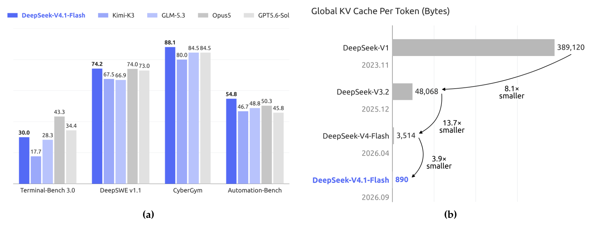
Figure 1:(a) Performance of DeepSeek-V4.1-Flash and its counterparts on agentic benchmarks. (b) Global KV cache size per token (in bytes) across generations of DeepSeek models, highlighting DeepSeek's sustained efforts to reduce context memory requirements. DeepSeek-V4.1-Flash achieves approximately 4-fold and 437-fold reductions in per-token global KV cache size relative to DeepSeek-V4-Flash and DeepSeek-V1, respectively.
Left: on core agentic benchmarks V4.1-Flash (blue) competes head-to-head with closed-source frontier models and leads on several. Right: per-token global KV shrinks generation over generation — another ~4× down from V4-Flash, a cumulative ~437× from V1. Since the unit is bytes/token, 890 bytes means even a 1M-token context needs only a sub-gigabyte global KV, dragging the memory threshold for long-context deployment far down.Report p.1
The second headline gain is "compute stays constant": thanks to sparse attention, speculative decoding, and friends, per-token decode compute barely grows with context length:
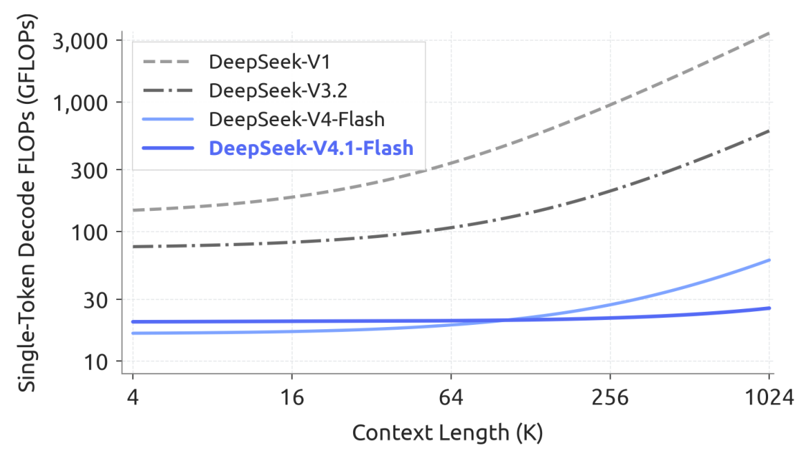
Figure 2:Single-token Decode FLOPs versus context length across generations of DeepSeek models. We account for compute precision by weighting BF16, FP8, and FP4 operations by 1, 0.5, and 0.25, respectively. DeepSeek-V4.1-Flash maintains nearly constant Decode FLOPs as context length increases, substantially reducing the computational cost of long-context scenarios.
With BF16/FP8/FP4 weighted at 1/0.5/0.25, the V4.1-Flash decode-FLOPs curve is nearly flat: growing the context 256× (4K → 1M) raises decode compute by only ~1/4, versus a visible climb for V4-Flash. "Cost per token that doesn't grow with conversation length" is the heart of long-horizon agent economics.Report p.5
💡 Click any image to view the full-resolution original; click again or press Esc to close.
Takeaway:Three levers — ① Architecture: CED (Causal Encoder-Decoder) runs only half the layers in prefill, dropping activated params from 16B to 8B; ② Cache: CSA2 cross-layer KV sharing plus FP4 quantization brings the global KV to 890 B/token; ③ Deployment: SWA Bounded Replay trades a little recomputation for not persisting SWA KV at all, halving the persistent cache again. Multiply the three layers and you get the 1/4 and 1/8 numbers.
02 · Background
Background & Motivation: the Triple Bottleneck
With the explosion of agent applications, the workload shape changed: a single task calls tools repeatedly over hours, each round carrying a longer context. The report splits deployment cost into three ledgers:
Compute: prefill on a KV-cache miss is expensive — sparse attention (DeepSeek-V3.2, V4) already cut long-sequence compute a lot, but prefill still dominates;
Storage: global KV lives in HBM (capacity-bound); persistent KV for prefix reuse lands on SSD / host memory (capacity- and retention-bound);
Bandwidth: cache migration and loading are limited by I/O and interconnect bandwidth, capping serving throughput.
DeepSeek-V4's attention mixes a global branch with per-layer sliding-window attention (SWA): the global branch keeps global KV (main KV + indexer K), SWA keeps local KV. With a fixed window, SWA storage is bounded, so for long enough sequences global KV dominates runtime footprint. Since V4 already pushed "compute" low enough, "store" and "move" became the new bottlenecks — exactly where V4.1-Flash aims.
The authors offer a crisp conceptual reframing: DeepSeek-V4 is essentially "an SWA local-processing backbone augmented with compressed global context." Following that view, V4.1's strategy is to leave the local SWA design alone and concentrate on simplifying the global branch. That yields three cooperating designs — CSA2 (share global KV and indices across layers), FP4 global KV (halve storage again), and SWA Bounded Replay (stop persisting SWA KV). The model also moves from V4's CSA+HCA hybrid to pure CSA2, simplifying further.
Why it's worth reading:this report is a demonstration of compression as a system: not a single-point algorithm, but a joint optimization of model architecture, cache precision, and deployment strategy, with an explicit cost ledger at every step (1/4, 1/8, +1/4 FLOPs) and ablations to back it. For anyone building long-context inference or serving systems, it is currently one of the most complete reference designs available.
03 · Architecture
Architecture: a 40-Layer CED + Multimodal Pathway
DeepSeek-V4.1-Flash is a multimodal MoE Transformer: images and text in, text out autoregressively. The language backbone has 40 causal Transformer layers organized as "20-layer causal encoder + 20-layer decoder" — the CED structure; except for the first two layers (SWA only), every layer carries both global attention and sliding-window attention. On the vision side, a ViT encoder plus an MLP projector turn images into visual embeddings that are processed jointly with text — multimodal data is in the mix from the first day of pre-training.
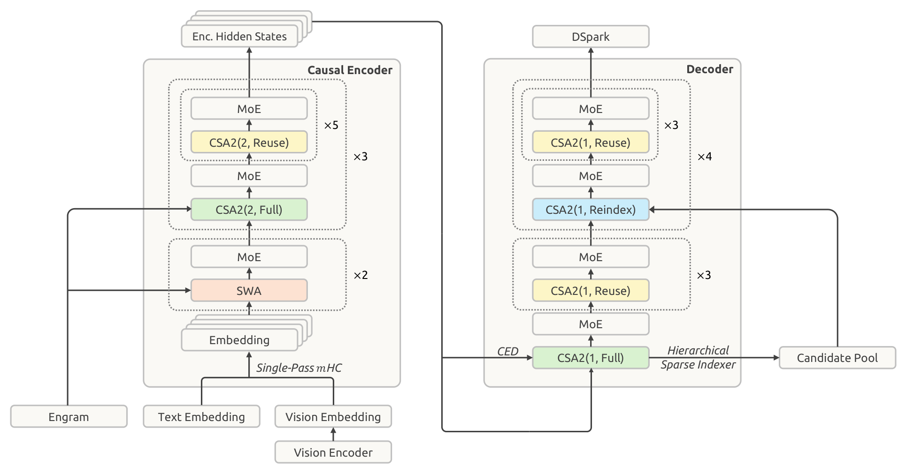
Figure 3:Overall architecture of DeepSeek-V4.1-Flash. The 40-layer network is divided into a causal encoder and a decoder, each with 20 layers. All feed-forward layers use standard DeepSeekMoE. The first two encoder layers use sliding window attention (SWA); the rest use Compressed Sparse Attention 2 (CSA2), with CSA2(ratio, mode) specifying the compression ratio and mode. The model also uses Single-Pass mHC, Engram, DSpark, and a Hierarchical Sparse Indexer.
Read bottom-up: visual/text embeddings enter the 20-layer causal encoder — first 2 layers pure SWA, the remaining 18 CSA2 (compression ratio 2) in three groups of "1 Full + 5 Reuse"; encoder hidden states flow up and simultaneously feed the decoder's global-KV projections. The decoder's 20 layers are all CSA2 (ratio 1): the first group is "1 Full + 3 Reuse", the other four "1 Reindex + 3 Reuse". Engram memory modules sit at layers 1 and 14, DSpark handles speculative decoding, Single-Pass mHC handles residual-stream mixing — every component's placement is deliberate, for memory and pipeline balance.Report p.7
Key facts, itemized:
Parameter ledger: 552B backbone + 196B Engram; 8B activated per token in prefill, 16B in decode — the asymmetric activation is a direct product of CED (next section);
MoE configuration: DeepSeekMoE's shared + fine-grained routed experts; each layer has 1 shared expert + 384 routed experts, 6 activated per token, expert intermediate dimension 2304, SwiGLU activation clamped at 10;
Attention configuration: indexer with 32 query heads, head dim 128, Top-512 KV entries selected per query; main attention with 64 query heads, head dim 512, query compression dimension 1280; SWA window $n_{\text{win}}=128$.
Multimodal architecture: DeepSeek-ViT and modality-specific load balancing
The vision pathway = ViT encoder + MLP projector. The ViT is trained from scratch with several changes to handle arbitrary resolutions: 2D-RoPE replaces absolute positional embeddings; the patch-embedding convolution becomes a linear projection (for Muon-optimizer compatibility); RMSNorm + SwiGLU throughout. Before features enter the LLM, a 3×3 pixel-unshuffle cuts spatial resolution by a factor of nine, effectively supporting inputs up to ~1344×1344 pixels. The ViT has 32 layers, hidden dim 1024, 16 attention heads, patch size 14; the projector has 2 layers with hidden dim 5120.
One MoE-side detail: modality-specific auxiliary-loss-free load balancing. Image and text tokens have different representation distributions and hence different expert-routing preferences; balancing them in aggregate would mask within-modality imbalance (the loss-free scheme itself is Wang et al., 2024a; here it is specialized per modality). So the model keeps separate expert-wise correction biases for text and image tokens: at routing time each modality uses its own biases for expert selection, while weighting still uses the original routing scores; after each training step the two bias sets update independently from their respective loads. A small change that makes multimodal training noticeably more stable.
Takeaway:The architecture diagram's core message is "grouping and reuse": 3 encoder groups, 5 decoder groups, and in each group only one layer does the heavy lifting (Full/Reindex) while the rest reuse. As we'll see, this static "few producers, many consumers" assignment is the common source of both the KV compression and the kernel-count collapse.
04 · Core Methods
Core Methods: CED and CSA2
CED: run only half the layers in prefill
Frequent tool calls in agent workflows generate massive prefill requests; whenever the KV cache misses, prefill cost bites. CED inherits the idea from YoCo (Sun et al., 2024; "You Only Cache Once"): let the upper half of the layers share the KV produced by the lower half. The difference is that CED adds two structural refinements — improving both the overall KV capacity and the computational depth of KV generation.
Concretely, for global attention the bottom $L/2$ layers act as the causal encoder; the decoder layers ($l > L/2$) no longer derive KV from their own hidden states $H_l$, but project it directly from the $L/2$-th (final encoder) hidden state $H_{L/2}$ with layer-dependent weights:
where $C_l$ is the KV entries and $Z_l$ the associated compression weights. Prefill then only has to fully compute the first half of the network, and the upper half's global KV arrives at the cost of a small projection — activated parameters per token drop from 16B (decode) to 8B (prefill). For input-heavy agentic loads, that is the most direct saving.
SWA keeps the conventional layer-wise computation: layer $l$'s local keys and values still come from its own hidden state $H_l$. This preserves the computational depth of local KV generation, but the price is a replay process in the decoder — computing decoder SWA KV during prefill needs an extra $n_{\text{win}} \times L/2$ tokens. For multi-turn interactions with short prompts per turn, that overhead is non-negligible. Hence Decoder SWA Bounded Replay: replay only the last $n_{\text{win}}$ tokens of the prompt for SWA (instead of $L \times n_{\text{win}}$). The justification is prior work: the effective receptive field of SWA is far smaller than the theoretical $n_{\text{win}}$ bound (Chen et al., 2025), and the report's experiments confirm the accuracy loss is negligible.
Overall, for sequence length $N \gg n_{\text{win}}$:
Serving long contexts means controlling both KV storage and attention compute. The report sorts existing techniques into three multiplicative dimensions:
Entry dimension: GQA reduces KV heads; MLA shares a small latent across heads;
Sequence dimension: every $m$ tokens compress into one entry (as in CSA/HCA);
Layer dimension: some layers reuse other layers' caches or selections (IndexCache reuses indices only; YOIO computes routing once and shares network-wide; HySparse lets sparse layers reuse dense-layer KV).
The gap in prior work: reusing indices alone saves no main-KV storage; network-wide routing sharing caps performance; hybrid designs still keep full-attention layers — none of them covers all three dimensions at once. CSA2's answer is the joint attack: share main KV and indexer K across layers, allow Top-K index reuse, and decouple "cache sharing" from "index reuse". Two further simplifications versus CSA: drop the overlap between adjacent compressed entries and the absolute positional embedding; derive indexer K by projecting main KV (no separate compression path from hidden states) — both simplify implementation and speed up training.
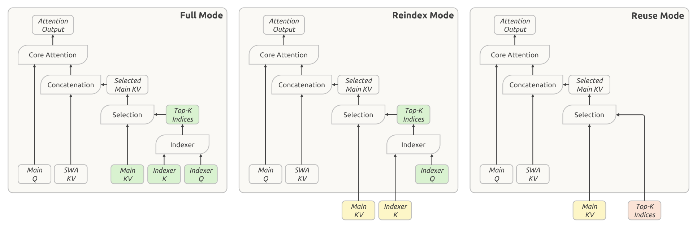
Figure 4:Three operating modes of CSA2. The modes differ in how they obtain main KV, indexer K, and Top-K indices. Green blocks indicate quantities computed in the current layer; yellow blocks indicate main KV and indexer K reused from the most recent Full Mode layer; while red blocks indicate Top-K indices reused from the most recent index-producing (Full or Reindex Mode) layer. All three modes compute main Q and SWA KV in the current layer.
Division of labor: green = computed in this layer, yellow = main KV / indexer K reused from the most recent Full layer, red = Top-K indices reused from the most recent index-producing layer. Full mode computes everything itself; Reindex mode borrows the KV but rescoring with its own indexer Q to pick fresh Top-K; Reuse mode borrows even the indices and does no indexing at all. All three modes compute their own main Q and SWA KV — "every layer's query is its own", preserving cross-layer expressive differences.Report p.10
Modes and their responsibilities:
Full Mode: computes its own main KV and indexer Q, projects indexer K from that main KV, runs the indexer for fresh Top-K indices — the complete CSA2 computation path;
Reindex Mode: reuses the most recent available main KV and its indexer K, but rescoring with its own indexer Q produces new Top-K — cache shared, selection free to vary;
Reuse Mode: reuses both main KV and Top-K indices, attends directly — no indexer Q, no index scoring.
Sharing main KV and indexer K removes duplicated storage; reusing Top-K indices removes index computation; Reindex mode keeps cache sharing while letting each layer select different entries. Under CED, the decoder's Full-Mode layers derive global KV from the final encoder hidden state; Reindex/Reuse are unchanged.
Dropping the configuration onto layer indices (organized from report §4.2.1; full training config in §7). Across the 40 layers, compression ratio and mode are statically assigned per group:
Encoder, 20 layers: the first 2 layers are pure SWA; the remaining 18 use CSA2 with compression ratio $m=2$, split into 3 groups × 6 layers — in each group the first layer is Full and the other 5 are Reuse, identical across groups;
Decoder, 20 layers: CSA2 with compression ratio $m=1$ (ratio 1 means the main KV is not sequence-compressed at all — a special case of CSA2; under CSA the ratio $m$ meant each main KV entry was built from $2m$ original entries, and CSA2 drops the overlap between adjacent entries plus the absolute positional embedding), split into 5 groups × 4 layers — group 1 is Full + 3×Reuse, the other four groups are Reindex + 3×Reuse.
Count the "producing" layers: 3 Full in the encoder + 1 Full in the decoder = only 4 layers in the whole model generate global KV from scratch; 4 more (Reindex) only recompute Top-K indices; the remaining 30 CSA2 layers are pure Reuse. That is what "layer-dimension compression" looks like at the layer-index level — and where the cross-layer-reuse contribution to the 890 bytes/token comes from.
Hierarchical Sparse Indexer: making deep-indexer cost constant
Cross-layer index reuse cuts the number of indexer evaluations, but the surviving indexers still score the full causally visible context — at extreme lengths that remains a compute bottleneck. The Hierarchical Sparse Indexer (decoder-only under CED) rests on a simple observation: information from shallower indexers can naturally restrict the candidates considered by deeper ones, with zero extra state.
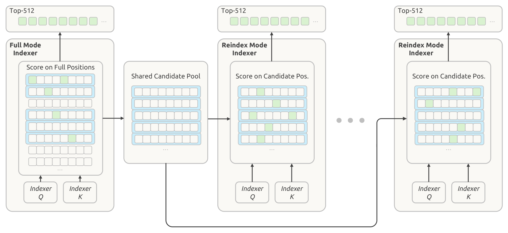
Figure 5:Hierarchical Sparse Indexer. Each square represents a position; green squares mark selected indices, and blue rectangles mark blocks selected based on their maximum indexer scores. The decoder's first CSA2 layer in Full mode selects its own Top-512 indices and builds a shared candidate pool from the selected blocks for subsequent layers. CSA2 layers in Reindex mode then select their Top-512 indices from this pool.
The first Full layer scores all visible positions, picks its own Top-512, and simultaneously performs blockwise candidate selection — each block gets the max index score among its positions, high-scoring blocks are selected, and their covered positions are collected into a shared candidate pool (green = finally selected indices, blue = selected blocks). Later Reindex layers score only inside the pool and pick their own Top-512. The configuration selects 2,048 blocks × 8 positions each = 16,384 candidate positions — from then on, each deeper indexer's scoring cost is constant, independent of context length.Report p.11
Mechanics: the first Full layer scans everything and builds the pool; the pool is much larger than the final Top-K (16,384 vs 512); subsequent Reindex layers search only inside it and pick different final entries, while Reuse layers do no indexing. The mechanism is training-aware: the candidate restriction is applied identically in training and inference, so deeper indexers are optimized under the same search domain they see at deployment. Per-query cost of deep indexers drops from "linear in context" to "constant" — the only price is the first layer's single full-range pass.
Takeaway:CED and CSA2 are complementary: CED removes the decoder's cost of producing global KV (prefill halved, 8B activation); CSA2 removes cross-layer duplicate KV storage and index compute (cache sharing + index reuse); the hierarchical indexer removes the long-context index scan (linear → constant). Stack all three plus FP4, and you get 890 bytes/token and near-constant decode FLOPs.
05 · Efficient Extensions
Efficient Extensions: mHC, Engram, DSpark, FP4, and Optimizers
Ideally the residual transformation between two blocks is a single map $(X_{l-1}, Y_{l-1}) \to (X_l, \hat{X}_l)$ with a lower bound of $(2n+2)d$ on activation traffic. But DeepSeek-V4's three-kernel implementation realizes $(4n+4)d$ — exactly twice the bound. The culprit is a dependency: input mixing $\hat{X}_l = A_l X_l$ must wait for the full reduction over $X_l$ (to produce $A_l$), forcing a second read of $X_l$.
Single-Pass mHC's fix is elegant: shift the input-mixing coefficients by one block — each block consumes the coefficients produced by the previous one:
With the dependency gone, each tile of $X_l$ can simultaneously drive input mixing and accumulate the projection outputs and sums of squares needed for coefficient prediction. Pre-training keeps the multi-kernel implementation (only the coefficient provenance changes); at deployment, residual update, input mixing, coefficient prediction, pre-norm, and FP8 conversion all fuse into a single Mega-mHC kernel, bringing activation traffic to $(2n+2)d$ — exactly the lower bound, half of the original. Empirically the shift costs almost nothing.
Engram: 196B parameters of conditional memory
Engram decouples "memory" from computation: tokenizer compression, multi-head hashing, context-aware gating, and multi-branch integration. V4.1-Flash makes two changes: drop the short causal convolution (gains didn't justify inference-stack complexity), and optimize the embedding tables with momentum + Sinkhorn balancing (below). Configuration: 196B parameters split evenly across two modules at layers 1 and 14 (for pipeline memory balance); $N$-gram orders {2, 3, 4}, 8 hash heads, total embedding dimension 2048 per order; each head indexes a table of ~16M entries with distinct prime sizes; embedding tables and K/V projections in FP8. At inference, deterministic addressing lets embeddings be prefetched from host memory via background RDMA — the first module's prefetch overlaps the first Transformer block's compute.
DSpark: confidence-scheduled speculative decoding
DSpark = semi-autoregressive drafting + confidence-scheduled verification. The drafter is 3 Transformer blocks (128-token sliding window); a single forward pass computes base logits for 5 draft positions in parallel, a lightweight Markov head models dependencies among draft tokens, and a confidence head predicts per-position conditional acceptance probabilities to estimate prefix survival probabilities. The scheduler combines these estimates with profiled engine-throughput curves to pick a per-request verification length that maximizes expected system-wide token throughput under current load. Unlike DeepSeek-V3's MTP, DSpark is trained in a dedicated stage after backbone pre-training (backbone frozen); during post-training it trains alongside the backbone without propagating its gradients into it — staying aligned with the evolving policy while accelerating both online serving and RL/OPD rollouts.
FP4 main KV cache: E2M1 with one E4M3 scale per 16 channels
V4 already applied QAT to indexer Q/K (Jacob et al., 2018) to accelerate indexing; V4.1 extends QAT to the main KV — note that FP4 here is for storage, not faster matmuls: values are dequantized before attention, so no native FP4 matmul hardware is needed and portability is preserved. The format is OCP-standard MXFP4 (Rouhani et al., 2023; even though alternatives scored slightly higher in tests): E2M1 with one E4M3 scale per 16 channels; following NVFP4 (Alvarez et al., 2025) but omitting the second-level global scale. The feasibility argument is neat: after RMSNorm the 512-channel KV latent has L2 norm at most $\sqrt{512} \approx 22.6$ (largest trained RMSNorm weight ≈ 1, RoPE preserves norms), while the format supports magnitudes up to $448 \times 6 = 2688$ and training observed maxima around 10 — dropping the global scale causes no measurable accuracy loss and simplifies the cache layout. Implementation details: quantize after RoPE (quantizing before gave only marginal gains and would add decode-time overhead); non-RoPE and RoPE components share the format; QAT enters during post-training; SWA KV stays FP8 (quantization-sensitive). Versus V4's FP8 main KV, storage halves again — in HBM and on SSD alike.
The base configuration continues V4: AdamW for normalization-layer and other non-matrix parameters ($\beta_1=0.9$, $\beta_2=0.95$, $\varepsilon=10^{-20}$, weight decay 0.1); Muon (Jordan et al., 2024) for linear-transformation weights (including Engram projections and the vision-language projector) with momentum 0.95, decoupled weight decay, and Nesterov momentum, rescaling each update's RMS to 0.18 to reuse the AdamW learning rate. Two new designs:
Head-wise Muon: split the Query (and Key) weights by head before the Muon update. Viewing Muon as preconditioned gradient descent, vanilla Muon shares one preconditioner across all heads, yet attention heads are heterogeneous — grouping by head empirically beats vanilla (independently corroborated by GLM-5 and Kimi-K3);
Sinkhorn-balanced update: applying Adam to the newly added Engram parameters would blow up optimizer-state memory. Instead: momentum + Sinkhorn balancing (extending SinkGD from linear layers to embedding tables; Scetbon et al., 2025) — same skeleton as Muon, but Newton–Schulz orthogonalization is replaced by alternating row/column normalization. It needs only a momentum buffer and empirically outperforms Adam.
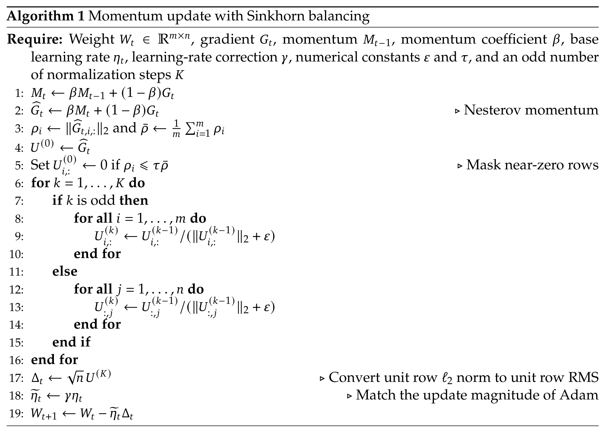
Algorithm 1:Momentum update with Sinkhorn balancing. Nesterov momentum is followed by K alternating row/column normalizations (with near-zero rows masked for stability); the $\sqrt{n}$ factor converts unit row $\ell_2$ norm into unit row-wise RMS, and the learning rate is corrected by $\gamma$ to match the update magnitude of Adam.
The procedure is structurally identical to Muon — only lines 6–16 swap Newton–Schulz for K alternating row/column normalizations. Intuition: in an embedding table, one row corresponds to a token index (or N-gram identity) and one column to a hidden feature; Sinkhorn equalizes RMS along both the "token" and "feature" axes, exactly exploiting the axis structure of these huge matrices. Rows with norm below $\tau \bar{\rho}$ are masked for numerical stability; $\sqrt{n}$ converts unit row $\ell_2$ norm to unit row RMS; $\gamma = 0.18$ corrects the effective learning rate (close to the 0.2 used in Moonlight).Report p.16
In the training configuration the Sinkhorn update uses $K=11$, $\tau=10^{-3}$, $\varepsilon=10^{-20}$, with momentum and learning-rate correction matching Muon; the Engram learning rate is scaled 5×. The authors also situate the update among axis-structure-aware optimizers (Adafactor, Adam-mini, SRON, etc.), leaving finer comparisons to future work.
Takeaway:The theme of this section is "memory traffic and storage": single-kernel mHC cuts activation traffic, Engram trades lookups for compute, FP4 cuts KV storage, Sinkhorn cuts optimizer state. Their shared spirit — not more compute, but making every byte of memory and bandwidth count — continues that of CSA2.
06 · Infrastructure
Infrastructure: Training and Inference Systems
For the architectural gains to materialize, the training and inference systems must be co-designed with the architecture. The report's principle: the architecture may be intricate, but the kernel flow must be remarkably concise.
Training infrastructure: three pieces
① Multimodal training: disaggregated encoder and hidden communication
The vision encoder is first optimized with a contrastive objective, then fine-tuned with a generative next-token loss. The contrastive phase computes the loss over a full batch of text-vision pairs, so features of both modalities must be all-gathered across data-parallel ranks — substantial communication. The key observation: the gradient of the text features depends only on the gathered visual features (and symmetrically for visual features), so both all-gathers can hide entirely behind compute:
For end-to-end parallelism, the disaggregated-encoder design places the ViT outside the LLM parameter tree; each training step runs in three phases — vision-encoder forward, LLM forward/backward, vision-encoder backward — so vision load is confined to the first and last phases and the LLM phase keeps the parallel strategy of text-only training. Ultra-long multimodal training adds two optimizations: balanced image sharding (each sequence's images are sharded across CP ranks with load balancing, each image read exactly once; the criterion involves only per-token quantities — whenever $\rho < B_{\text{IO}}/(B_{\text{GPU}} C)$, loading hides behind compute regardless of sequence length or cluster size) and incremental image transfer (RL rollouts send only deltas, with CPU-side decoding and preprocessing cached on a distributed filesystem for reuse).
② Training with shared attention states (CSA2)
Layers that share attention components may sit on different pipeline stages, so direct module reuse is incompatible with stage-local execution. Three mechanisms resolve this:
Shadow indexers: each participating stage holds a lightweight executable replica while a single logical owner keeps the shared parameters (optimization and checkpointing); parameter synchronization and gradient aggregation keep replicas consistent — the pipeline scheduler never treats shared layers as a special unit;
Pipeline payload extensions: when producers and consumers straddle a stage boundary, the intermediate representations and sparse-routing information ride the existing point-to-point communication path, partitioned consistently with context parallelism;
Micro-batch-level shared-state management: tracks the states of concurrently active micro-batches across forward, activation recomputation, and backward, releasing each state promptly after its final consumer finishes.
③ Engram parallelism
Embedding tables are partitioned by row across dedicated process groups (the engram-parallel size trades per-device memory against lookup communication scope); optimizer states are further sharded across replicas. Embedding prefetch fires for the whole local batch before each pipeline stage begins; embedding gradients are buffered during backward and returned to their owning ranks after the backbone backward; both overlap the vision encoder's forward/backward. Embeddings are stored and fetched in FP8, with retrieved values and scaling factors fed straight into the following GEMM. During RL rollouts the tables stay resident in GPU memory, avoiding host-memory-fragmentation OOMs.
Inference system: few kernels, EPD disaggregation, and a persistent-cache overhaul
Through kernel fusion (FlashMLA's fused RoPE-attention-RoPE-cast kernel, DeepGEMM's Mega-Gate/Mega-mHC/Mega-MoE, TileKernels, DeepSelect's TopK), the vast majority of Transformer layers — those whose CSA2 runs in Reuse Mode — execute with just 15 kernels in prefill and 11 in decode. Deployment uses EPD: vision encoding, prefill, and decoding scale independently and overlap.
Persistent KV cache management: evicting SWA KV from SSD
In the V4 deployment, SWA KV accounts for nearly half of persistent-cache capacity: global and SWA KV are managed independently under LRU; SWA KV is cached only at two points (end of prompt, end of output), yet even retaining only $n_{\text{win}}$ entries per point, uncompressed storage is costly — and the 72-hour retention policy fundamentally mismatches SWA's minute-scale reuse window: once a session ends, the data is dead. V4's proposed Zero SWA Caching recovered misses by full recomputation over $L \times n_{\text{win}}$ tokens — too expensive for production.
V4.1's revision settles the matter:
SWA KV leaves the persistent cache entirely, moving into a distributed memory pool provisioned from 10% of host DRAM per machine. The pool is far smaller, but its TTL is minutes and expired entries recycle immediately for new sessions — the turnover suffices for the vast majority of concurrent active sessions; global KV remains persistent with a guaranteed ≥72-hour lifetime;
A miss is no longer scary: Encoder SWA Bounded Replay is the lightweight fallback that turns a catastrophic miss into a graceful, inexpensive degradation — the cornerstone that justifies removing SWA KV from the persistent cache in the first place.
SWA Bounded Replay: one policy, two uses
SWA dependencies accumulate across layers; exactly reconstructing the SWA KV of $L$ layers requires replaying $L \times n_{\text{win}}$ tokens. Bounded Replay replays only the most recent $n_{\text{win}}$ tokens and truncates SWA to the replay segment: for a replay starting at position $s$, a query at position $i$ attends to SWA keys in $\left[\max(s, i-W+1),\, i\right]$ — approximate states accepted.
Encoder SWA Bounded Replay makes prefix caching depend only on global KV. When encoder SWA KV is missing, the last $n_{\text{win}}$ tokens of the cached prefix are replayed and processed together with the uncached suffix; replayed tokens regenerate only SWA KV while the cached global KV is reused untouched. By design the replayed prefix state is approximate, so the KV computed for the suffix is not mathematically identical to the exact version — yet experiments show the response quality barely moves;
Decoder SWA Bounded Replay bounds the decoder forward to $n_{\text{win}}$ tokens, nearly halving total prefill compute. Under CED the decoder's global KV is projected from the encoder's final state; the only obstacle is decoder SWA KV (generated per-layer, needed by the first decode steps). Since decoder SWA KV is never cached, exact reconstruction would run $L/2$ decoder layers over $L/2 \times n_{\text{win}}$ prompt tokens — expensive precisely when a long cached prefix meets a short uncached suffix. So every prefill replays the last $n_{\text{win}}$ prompt tokens, feeds their encoder outputs through the decoder layers under the same SWA truncation, and uses the resulting SWA KV for decoding only — never for prefix caching. For extra safety, post-training simulates the same replay for train-aware adaptation.
Takeaway:Persistent-cache 1/8 = two multiplicative factors: SWA KV no longer persisted (≈ halves it) × global KV compressed to 1/4 by architecture and precision. The pivot enabling both is Bounded Replay dropping the miss cost from $L \times n_{\text{win}}$ to $n_{\text{win}}$ — one acceptable approximation unlocking storage and compute savings simultaneously.
07 · Pre-Training
Pre-Training: 45T Multimodal Tokens and Evaluation
Data construction: from sample quality to corpus-level interactions
On the text side, this generation's pipeline shifts focus from the "sample-level quality reflected by small-scale experiments" to holistic interactions and information gains across diverse corpora: a scaling ladder over model parameters and training data guides large-scale runs; model-generated content with limited information gain (weaker-model outputs, low-quality machine translation) is filtered out — treated as implicit duplication that becomes detrimental over long horizons; more domain experts contribute fine-grained quality dimensions; and fresher code from newly released repositories, commits, libraries, and frameworks broadens language and real-world coverage.
The multimodal philosophy is "clean in native form, refuse large-scale synthesis": raw web data naturally carries multimodal knowledge, so the pipeline prioritizes cleaning and using it natively. The crawler was re-bootstrapped from Common Crawl (it had skewed text-centric); image-text pairs are filtered by image-text relevance thresholds and deduplicated by image semantics; interleaved data comes mainly from webpages and PDFs, processed in progressively more expensive stages (heuristic/statistical filtering, dedup, quality models first; image-aware filtering and dedup next; strict SmolVLM quality scoring last), with filtered-out documents partly recycled into extra image-text pairs; domain-specific data supplements fine-grained perception (grounding/pointing), OCR, and long-tail knowledge, plus image-code pairs and computer-use trajectories. The final corpus merges at a 7 : 1 text-only : multimodal token ratio (overlapping samples replaced by their multimodal versions), ultra-long documents are deterministically pre-split, and an improved best-fit packing keeps the padding rate at most $10^{-4}$.
Training setup: sparse from scratch, starting at 64K
Model configuration: 40 layers, hidden dim 5120; first 2 layers pure SWA; 18 encoder CSA2 layers (ratio $m=2$) in 3 groups of 6 (1 Full + 5 Reuse); 20 decoder CSA2 layers ($m=1$) in 5 groups of 4 (first group 1 Full + 3 Reuse, the rest 1 Reindex + 3 Reuse); hierarchical indexer with 2,048 blocks × 8 positions = 16,384 candidates; 8 output-projection groups, intermediate attention-output dim 1024;
Training recipe: 45T tokens with no instability; batch fixed at 100.6M tokens; learning rate warms linearly over the first 2000 steps, holds at $2.6\times10^{-4}$ until 28T, cosine-decays to $2.6\times10^{-5}$ between 28T and 40T, then holds to 45T; sparse attention trained from scratch at 64K (no dense-attention warmup), extended to 1M at 34T; auxiliary-loss-free balancing with bias update speed 0.001 per modality plus a small sequence-level balance loss (weight 0.0001); sample-level attention masking continues from V4;
Two-stage ViT training: contrastive pre-training with SigLIP's sigmoid loss on ~47B image-text pairs at 224×224 (higher resolutions add little here); autoregressive fine-tuning with a 4B MoE LLM on 236B tokens (resolution 544×544 to 1344×1344), after which the LLM is discarded and only the optimized vision encoder enters main pre-training.
Base-model evaluation: Pro-level results at 1/3 the parameters
The base comparison spans world knowledge, language understanding & reasoning, coding & math, long context, and multimodality:
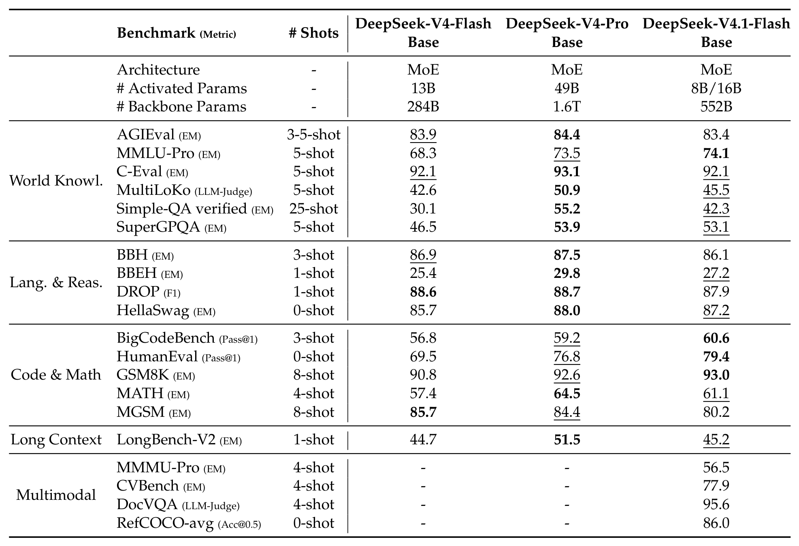
Table 1:Comparison among DeepSeek-V4-Flash-Base, DeepSeek-V4-Pro-Base, and DeepSeek-V4.1-Flash-Base. All models are evaluated in our internal framework and share the same evaluation setting. Scores with a gap not exceeding 0.3 are considered to be at the same level. The highest score in each row is in bold font, and the second is underlined.
The three columns: V4-Flash-Base (13B activated / 284B backbone), V4-Pro-Base (49B / 1.6T), V4.1-Flash-Base (8B·16B / 552B). Highlights: MMLU-Pro 74.1, BigCodeBench 60.6, HumanEval 79.4, and GSM8K 93.0 are all best or tied-best — with ~1/3 the total parameters and 1/4 the activated parameters, V4.1-Flash-Base matches the 1.6T V4-Pro-Base on knowledge and reasoning and beats it on several code/math benchmarks. The multimodal block (MMMU-Pro 56.5, DocVQA 95.6, CVBench 77.9, RefCOCO-avg 86.0) is the direct validation of native multimodal training.Report p.24
By category: world knowledge and language understanding land in the same band (MMLU-Pro 74.1 above Pro's 73.5; BBH/BBEH/DROP within 0.3–2.7); coding and math lead on several rows (BigCodeBench 60.6, HumanEval 79.4, GSM8K 93.0); MGSM at 80.2 is the notable regression (below Flash's 85.7 and Pro's 84.4); LongBench-V2 at 45.2 matches Flash and trails Pro's 51.5. The report credits the data pipeline's quality improvements as well.
Real competence beyond APIs shows in perplexity. The team ran bits-per-byte (lower is better) tests on held-out internal corpora (internal documentation, proprietary code repositories, academic materials):
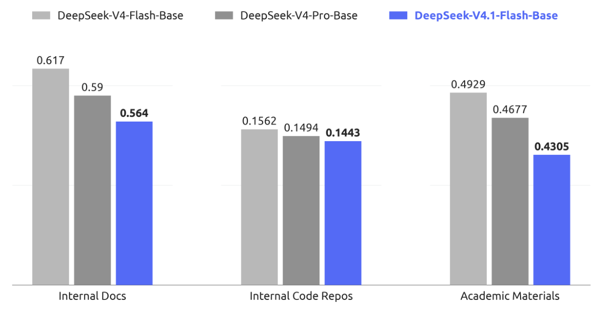
Figure 6:Bits-per-bytes (BPB) comparison of DeepSeek-V4-Flash-Base, DeepSeek-V4-Pro-Base and DeepSeek-V4.1-Flash-Base on our held-out evaluation sets. DeepSeek-V4.1-Flash-Base achieves lowest BPB on all tasks and demonstrates greater potential to serve as a strong base-model.
On every internal held-out task, V4.1-Flash-Base posts the lowest BPB — the strongest compression ability on internal docs, code, and academic material. A 5%–10% edge on held-out sets, at a smaller parameter count, says its base-model potential is about distribution fit, not benchmark gaming.Report p.25
Takeaway:Three signals from pre-training — ① sparse-from-scratch (64K, no dense warmup) ran stably end to end: sparse attention is now natively trainable; ② native multimodality didn't tax text ability and even helped code/math; ③ parameter efficiency: 1/3 total and 1/4 activated parameters align with the Pro base.
08 · Post-Training
Post-Training: No New Algorithms, Just Data and Scale
This release deliberately introduces no post-training algorithms: the recipe is the standard SFT → RL → OPD, unmodified beyond well-established DeepSeek-V4 practice. All the investment goes into "what to train on" rather than "how to optimize" — large-scale, automated pipelines for task synthesis and environment construction. The authors' one-line conclusion is blunt: under a fixed, unremarkable optimization procedure, improvements in the scale, diversity, and verifiability of synthesized data and environments account for essentially all the gains; at this stage, the marginal return of engineering the data pipeline far exceeds that of algorithmic novelty.
Large-scale agent task synthesis
Each task is formalized as a triplet (problem, environment, verification system), evaluated along difficulty (non-trivial) and correctness (no critical flaws among the three components); both serve as reward signals to iteratively train the model to construct better tasks, and every reuse of a task in a new RL run yields fresh trajectories for quality re-auditing. Two dedicated pipelines:
General agents: employees and external partners are encouraged to fold the latest model into daily workflows and voluntarily return interaction data; from the observed interfaces the team builds a large set of mocked tools faithfully reproducing real SaaS/enterprise systems — input formats, output structures, API schemas, behavioral constraints. Negative feedback and failure cases are collected at scale, and the pipeline reconstructs tool context, user-interaction patterns, and failure conditions for systematic failure replay and targeted RL;
Coding agents: environments come from internal/partner coding sessions (keeping highly complex or poorly-performing tasks, deduplicated by trajectory) and public GitHub repos above a star threshold. Construction is multi-agent: one agent checks whether the project builds, runs, and auto-verifies inside a container, picks a commit/turn as the starting point, designs several sufficiently complex implementation directions, and produces fail-to-pass / pass-to-pass evaluation points; another agent sets up dependencies, the initial working directory, test code, and task descriptions in an isolated container, self-tests, scrubs any solution-leaking traces, and packages the environment as a new image layer; then several distinct agents attempt the task while an independent quality-inspection agent reviews environment and trajectories (environment defects, factual errors, evaluation-point mismatches, hackability); failed inspections go to a repair agent and re-verification.
Scaling RL: compute and scaffolds
Large-scale asynchronous RL on synthesized tasks scales along two axes: training compute and the number of scaffolds. Rollout execution is decoupled into an agent sandbox + worker container: the sandbox runs the scaffold and its tools; the worker provides a scaffold-agnostic control layer (orchestrating rollouts, normalizing heterogeneous interactions into a common trajectory schema, talking to the trainer). Both run on DSec, outside the preemptible GPU training pool; on trainer preemption, rollouts suspend with full state and resume later. Successive RL runs are reinitialized via model merging, combining improvements acquired along different optimization paths and continuing to scale.
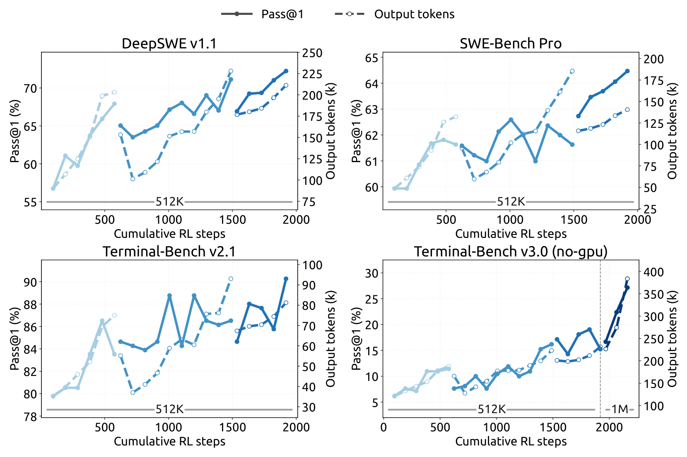
Figure 7:Performance improves on various code agent benchmarks as RL training scales in the Minimal mode of DeepSeek Harness. Further extending maximal context length to 1M tokens continues to improve performance on extremely long-horizon tasks, e.g., Terminal-Bench v3.0.
Four panels — DeepSWE v1.1, SWE-Bench Pro, Terminal-Bench v2.1, and v3.0 (no-gpu): solid Pass@1 climbs monotonically with cumulative RL steps; dashed lines are output tokens. The disconnected curve segments correspond to successive runs re-initialized by model merging — performance keeps rising after each merge. Most striking is the bottom-right panel: raising the context cap from 512K to 1M buys another jump on Terminal-Bench v3.0-style ultra-long-horizon tasks — context length itself becomes part of RL scaling.Report p.27
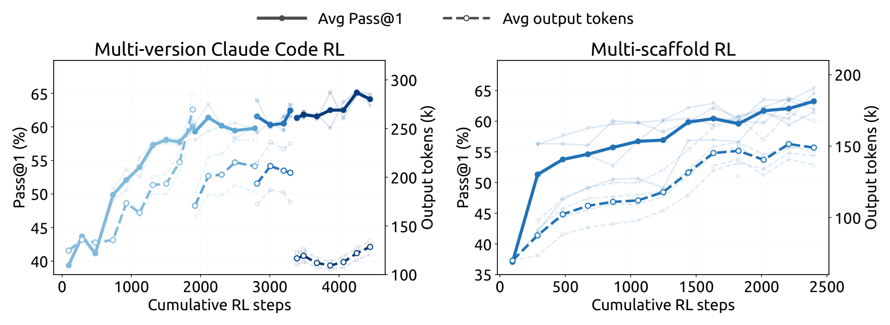
Figure 8:Performance improves with cumulative RL steps when jointly training across multiple versions of Claude Code (left) and across heterogeneous scaffolds, including OpenCode, Pi, and DeepSeek Harness in Standard and PTC modes (right). Performance is evaluated on DeepSWE v1.1. Lighter curves show the evaluation of individual scaffold versions or scaffolds.
Left: joint training across several Claude Code versions lifts the average Pass@1 steadily. Right: joint training across heterogeneous scaffolds (OpenCode, Pi, DeepSeek Harness Standard/PTC) works just as well. The lighter curves are per-scaffold evaluations — joint training sacrifices no single scaffold and lifts the whole ensemble, which directly explains the cross-scaffold robustness in Table 4 below.Report p.28
DSec: elastic compute for millions of sandboxes
From V3 to V4, the exploding number and diversity of agentic environments motivated DeepSeek Elastic Compute (DSec), a production-grade sandbox platform. V4.1 pushed demand to millions of concurrent sandbox instances, shifting the bottlenecks to datacenter scalability, workload isolation, per-node compute density, and containing increasingly capable misbehaving agents:
Horizontal scaling: sharding (scale units) isolates experiments and contains blast radius; instead of Kubernetes, a custom placement engine trades strong global consistency for scalability — multiple independent replicas make good-enough placements from recent measurements, with each node enforcing a hard local admission check. The system scales to millions of containers without a central-coordination bottleneck;
High density: hardware sub-NUMA partitioning binds each worker VM to its own NUMA domain with containers confined to local NUMA resources — under comparable workloads, concurrent live containers per physical node rise from ~1,000 to 2,500+ before measurable end-to-end degradation. A latency-sensitive (LS) execution class applies SCHED_IDLE to non-LS tasks, and core scheduling keeps sibling hyperthreads to same-priority tasks, eliminating evaluation interference;
Containing misbehaving agents: during RL, agents attempt reward hacking or crash environments — documented exploits include the XFS-driver permission issue, illegal memory access in AppArmor, answer leaks from package-mirror services, plus deleting critical binaries, breaking system files, or removing the filesystem. Countermeasures: per-sandbox AppArmor profiles and fine-grained eBPF network policies; a crashed environment counts as a failed trajectory with a "repercussion" signal to the RL framework.
Controllable reasoning effort: one scalar for the cost-quality frontier
Beyond architecture and hardware, output-token count is the other determinant of serving cost. V4.1 introduces a scalar effort level $b \in \{1,\dots,100\}$ as an explicit conditioning signal prepended to the system prompt ("Reasoning Effort: {effort}; higher values request more thorough reasoning"), applied to both single-turn reasoning and multi-turn agentic tasks. For each training prompt, $M_b$ responses are sampled per effort level; rewards are mean-centered within each $(x, b)$ subgroup (effort levels are never directly compared); effort-dependent behavior is induced by the length component of the reward:
with $\ell_{b,j}$ the reasoning-token count, $L_{\text{norm}}$ a reference length, and $C_{\max}$ the deduction cap; the token-penalty coefficient decays exponentially — each increment of $b$ by $\tau$ multiplies the coefficient by $e^{-1}$. $k_0$ sets the overall pressure toward brevity; smaller $\tau$ separates effort levels more sharply. Appendix C derives the exponential parameterization from marginal utility: if the marginal solve-probability decays roughly as $p'_x(\ell) \approx a_x e^{-\ell/s_x}$, the preferred reasoning length is approximately affine in $b$:
At deployment, $b$ becomes a continuous dial over reasoning strength on a single checkpoint — intermediate values never seen in training interpolate smoothly. The public API (launched September 2026) exposes three preset tiers:
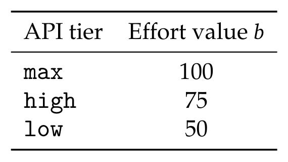
Table 2:Mapping between the public API reasoning-effort tiers and the underlying scalar effort values $b$.
max / high / low map to $b = 100 / 75 / 50$. Users pick an operating point on the learned cost-quality frontier — model weights and decoding configuration unchanged. One checkpoint, three temperaments.Report p.30
Asynchronous post-training infrastructure
The long-tail problem in RL rollouts (a few stragglers stalling every batch) is the classic efficiency killer. V4.1 made the post-training infrastructure end-to-end asynchronous, covering nearly all RL and OPD tasks:
Sample-level dispatch: rollout and training colocate and time-share the same devices; each task caps in-flight samples. Three dispatch granularities were tried — batch-level (metrics oscillated badly, too coarse), prompt-level (stalls easily on long-tail samples inside a GRPO group), and finally sample-level: dispatch a prompt as soon as enough new samples arrive to fill its GRPO group, keeping concurrency flat throughout;
Two side effects, two handles each: length-distribution bias (short sequences finish first and dominate early batches) — per-dataset concurrency limits plus discarding early-returned short samples to smooth the transition; off-policy drift (samples partially or wholly from older checkpoints) — dispatching/waiting logic bounds the maximum off-policy ratio, and a loss-masking scheme drops excessively stale tokens;
Seamless switching: once enough training samples accumulate, training preempts rollouts with token-level interruption; KV cache and expert routing persist at token granularity so resumption with a new checkpoint continues exactly where things stopped, no re-prefill; sample-grained GC frees each sample's states upon completion; samples spanning checkpoints use concatenated routing-replay. The same machinery also lets training jobs yield to cluster preemption without losing progress;
Large-scale OPD: the final full-vocabulary OPD spans all domains with 40+ teachers (the best teacher per domain may come from a different development stage, with heterogeneous architectures); the infrastructure supports near-zero-cost switching among architecturally heterogeneous teachers and consistent dynamic reconfiguration of dataset mixtures, per-dataset concurrency caps, and active teachers under asynchrony.
Evaluation: agent capability aligned with the closed-source frontier
Post-training evaluation focuses on reasoning and agency (knowledge is largely settled by pre-training; see Table 1). Reasoning: GPQA Diamond, HLE, Codeforces (internal benchmark), MathArena Apex at temperature/top-p 1.0. Agents fall into four categories: code agents, cyber security, general agents, and visual agents. Anti-reward-hacking measures: no internet, stripped Git histories, automatic purging of build/package caches — and exploits still surfaced (decompiling core Ubuntu packages to find vulnerabilities in CyberGym), prompting the authors to urge the community to prioritize detection and mitigation when designing next-generation benchmarks.
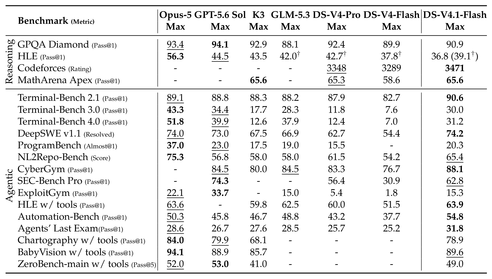
Table 3:Comparison between DeepSeek-V4.1-Flash with closed/open source models. † denotes text-only subset of HLE. The best results are highlighted in bold; the second-best results are underlined.
Seven columns: Opus-5, GPT-5.6 Sol, Kimi-K3, GLM-5.3, DS-V4-Pro, DS-V4-Flash, and V4.1-Flash. V4.1-Flash takes several firsts: Terminal-Bench 2.1 90.6, DeepSWE v1.1 74.2 (above Opus-5's 74.0 and GPT-5.6 Sol's 73.0), CyberGym 88.1, SEC-Bench Pro 62.8, AutomationBench 54.8, Agents' Last Exam 31.8, HLE w/ tools 63.9; Codeforces 3471 beats both V4-Pro (3348) and V4-Flash (3289); MathArena Apex 65.6 ties Kimi-K3 for best open-source. Versus V4-Flash nearly everything leaps (DeepSWE 54.4→74.2, TB3.0 7.6→30.0, SEC-Bench 30.9→62.8). The blind spots are honest too: TB4.0 31.2 vs Opus-5's 51.8 — expert-level science-oriented tasks remain giant-model territory; HLE 36.8 also trails Opus-5's 56.3.Report p.33
On cyber-security tasks V4.1-Flash sets a new open-source record — and the report explicitly flags the dual-use nature, encouraging responsible applications such as defensive security research and vulnerability remediation. Visual agents (Chartography 78.9, BabyVision 89.6, ZeroBench 49.0) beat the strongest open-source competitor Kimi-K3, though a measurable gap to the closed-source leaders remains.
Reasoning effort: one smooth cost-quality curve
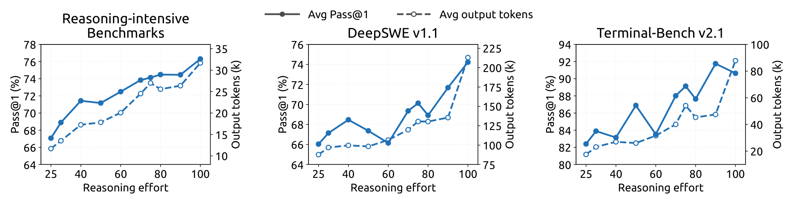
Figure 9:Performance and output length as a function of reasoning effort. Each panel plots Pass@1 (solid, left axis) and mean output tokens per response (dashed, right axis) as the reasoning-effort value is varied from 25 to 100; The results of reasoning-intensive benchmarks are averaged over eight benchmarks (AIME 2026, Apex 2025 Shortlist, GPQA Diamond, HLE, IMO-AnswerBench, LiveCodeBench, MathArena-Apex, SimpleQA-Verified). DeepSWE v1.1 is evaluated based on mini-SWE and Terminal-Bench v2.1 is evaluated based on DeepSeek Harness (Minimal).
Raising effort from 25 to 100 lifts the eight-benchmark reasoning average from 67.1% to 76.3%, DeepSWE v1.1 from 66.0% to 74.2%, and TB2.1 from 82.4% to 90.6%, at roughly 2.5× the output tokens. The gains are front-loaded: the 60–80 range already recovers most of max-tier accuracy at under half its token budget, while the final push to 100 stretches agent trajectories 1.6–1.8× for marginal returns. Effort control learned on single-response reasoning transfers faithfully to multi-turn agentic trajectories — governing the total exploration and verification across turns.Report p.35
Cross-scaffold robustness: capability that doesn't pick its harness
In practice a model is rarely welded to one agent framework. The evaluation covers 8 configurations from 6 scaffold families (Claude Code, Codex, OpenCode, Pi, mini-SWE, DeepSeek Harness Minimal/Standard/PTC), changing only the harness while keeping the model and decoding fixed:
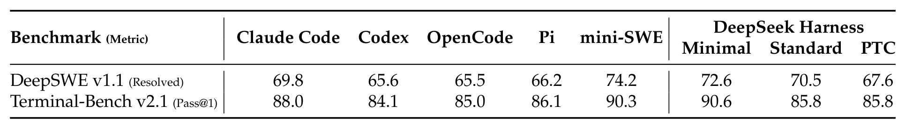
Table 4:Performance across agent scaffolds at Max reasoning effort.
Across the eight configurations, DeepSWE v1.1 spans 65.5–74.2 and TB2.1 spans 84.1–90.6 — a spread under 9 points, and the in-house mini-SWE / DeepSeek Harness don't always win (Claude Code hits 88.0 on TB2.1). Capability transfers smoothly across scaffolds rather than binding to one framework — credit the diversity of environments, tool schemas, and interaction formats in the synthesized training data. Notes: DeepSWE uses N=8 samples per task, TB2.1 N=3; Linux containers, temperature 1.0, top-p 0.95, 1M-token context, max_steps=500 per agent; TB2.1 without network; the Claude Code column reports v2.1.251 with all four versions detailed in Table 5 below.Report p.35
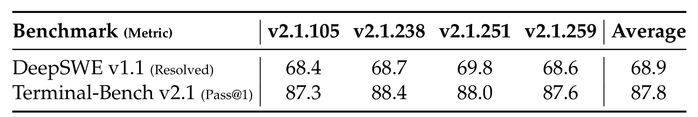
Table 5:Performance across Claude Code versions at Max reasoning effort.
Appendix detail: across four Claude Code versions (v2.1.105/238/251/259), DeepSWE spans 68.4–69.8 (average 68.9) and TB2.1 spans 87.3–88.4 (average 87.8) — under 1.5 points of variation. Table 4's 251 column wasn't cherry-picked; behavior is stable across versions.Report p.48
Multi-agent: first experiments with Agent Team mode
DeepSeek Harness's Agent Team mode explores multi-agent collaboration: a lead agent asynchronously creates named persistent teammates via spawn_teammate (fresh mode without lead history, or fork mode with a one-time snapshot of the lead's completed turns); all agents share one repository checkout so edits are immediately visible; a durable peer mailbox delivers messages at the next step boundary, starts new turns for idle teammates, or resumes inactive ones; a shared task board maintains ownership, dependencies, and advisory write scopes (updates with revision checks); when needed, only the lead can interrupt a teammate's turn via interrupt_agent. The training reward = task performance + a collaboration bonus (encouraging delegation and inter-agent communication) + a derived-latency penalty: execution events and their collaboration dependencies form a DAG, costs come from token counts at fixed prefill/decode rates plus measured tool-execution time, and the penalty is the critical-path length — rewarding useful parallelism, punishing needless serialization and synchronization, and staying insensitive to serving-side batching and queuing delays.
Evaluation uses a high-confidence ProgramBench subset (only tasks where the reference solution passes ≥95% on the hidden test suite — 172 "golden" tasks) and a no-GPU subset of FrontierSWE v2:
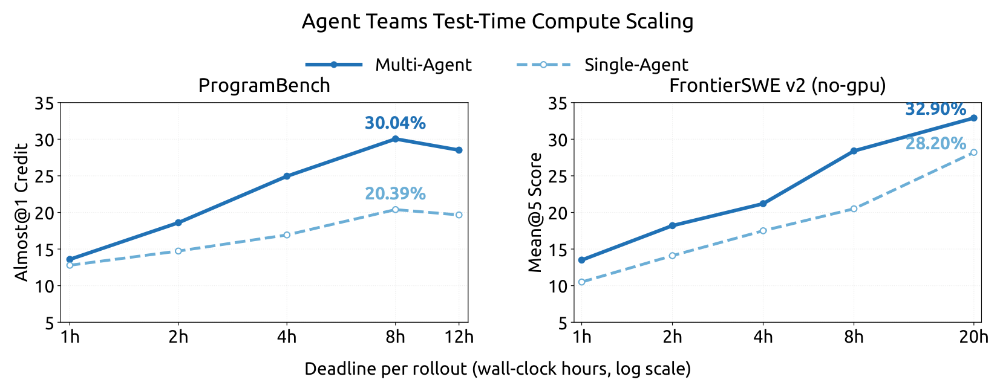
Figure 10:Test-time compute scaling for single-agent and multi-agent configurations on ProgramBench (Almost@1) and FrontierSWE v2 (Mean@5) as functions of the per-rollout wall-clock deadline.
The x-axis is the per-rollout wall-clock deadline (log scale). ProgramBench: multi-agent Almost@1 climbs from 13.59% at 1 hour to 30.04% at 8 hours, versus 12.79%→20.39% for single-agent; FrontierSWE v2: 13.50%@1h → 32.90%@20h multi-agent versus 10.50%→28.20% single. Multi-agent wins at every deadline, and the gap widens with the budget — collaboration's value compounds with available compute. The report is candid that these are preliminary experiments comparing each side's strongest configuration.Report p.36
Appendix extras: fine-grained behavior of effort control across scaffolds and benchmarks
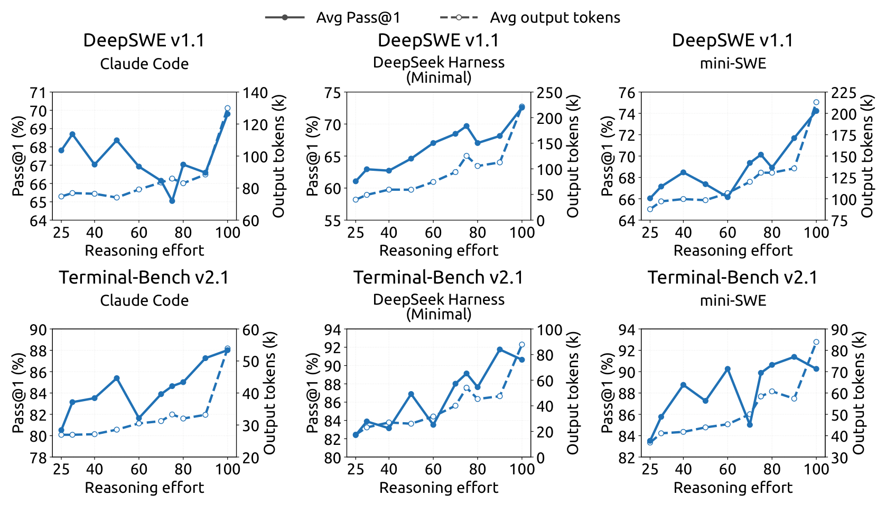
Figure 11:Reasoning effort drives trajectory length consistently but correlates only weakly with accuracy across coding scaffolds. Each panel plots Pass@1 (%, solid, left axis) and mean output tokens per trajectory (k, dashed, right axis) against the reasoning-effort setting, for DeepSWE v1.1 (top row) and Terminal-Bench v2.1 (bottom row) under three agent scaffolds: Claude Code, DeepSeek Harness (Minimal) and mini-SWE. All panels come from the same checkpoint.
The six panels (top row DeepSWE, bottom row TB2.1 × three scaffolds) agree: trajectory length grows monotonically with effort, while Pass@1 improves overall but not monotonically (plateaus and dips mid-range); the three scaffolds are calibrated differently — on DeepSWE, Claude Code is the flattest and spends the fewest extra tokens while DSH (Minimal) starts lowest and gains the most; on TB2.1 the three collapse into a narrow band. Same checkpoint, meaningfully different behavior per scaffold: once tasks near saturation, scaffold choice matters at least as much as the effort tier.Report p.49
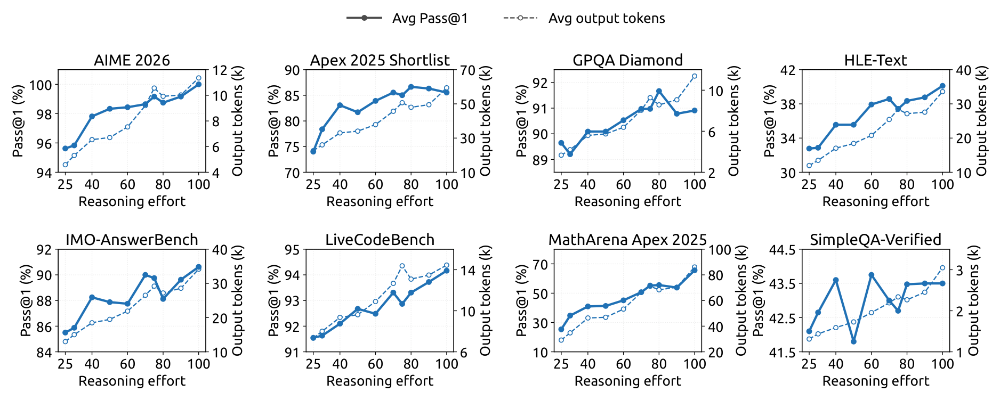
Figure 12:Performance and output length as a function of reasoning effort on eight reasoning-intensive benchmarks. Each panel plots Pass@1 (solid, left axis) and mean output tokens per response (dashed, right axis) as the reasoning-effort value is varied from 25 to 100.
All eight benchmarks (AIME 2026, Apex 2025 Shortlist, GPQA Diamond, HLE-Text, IMO-AnswerBench, LiveCodeBench, MathArena Apex 2025, SimpleQA-Verified) behave: length scales uniformly at 2.0–3.1× (AIME 4.6k→11.4k, MathArena Apex 29.1k→86.1k — costs are predictable), and no benchmark ever degrades as effort rises — MathArena Apex 2025 gains +40.3 (25.3%→65.6%), AIME 2026 reaches a full 100% at effort 100, and already-saturated benchmarks hold steady (GPQA +1.3, LiveCodeBench +2.6). One reliable, predictable knob lets each deployment pick its effort tier by latency and compute budget without sacrificing accuracy.Report p.50
Takeaway:The most valuable content here is methodological, not modelological: ① fix the algorithm, pour everything into industrial-scale production of verifiable data and environments — the gains speak; ② asynchrony + sample-level dispatch + token-level interruption systematically solve RL infrastructure's long-tail and preemption pains; ③ the scalar effort turns test-time compute allocation into a continuous, interpolatable, cross-scaffold product interface; ④ multi-agent clearly delivers "1+1>2" on the hardest repo-scale tasks, and the dividend grows with the time budget.
Glossary
Glossary
Refer back here any time; dotted-underlined abbreviations in the text show their meaning on hover.
Reading glossary (dotted-underlined abbreviations in the text show tooltips on hover)
Abbreviation
Full name
One-line explanation
MoE
Mixture-of-Experts
Each token activates only a few experts: huge total parameters, small activated set
CED
Causal Encoder-Decoder
Bottom half as encoder; upper layers' KV projected from the encoder's final state — prefill compute roughly halved
CSA2
Compressed Sparse Attention 2
Second-gen compressed sparse attention: cross-layer main-KV/indexer-K sharing with Top-K index reuse, in Full/Reindex/Reuse modes
SWA
Sliding-Window Attention
Each layer attends to the most recent n_win=128 tokens; storage bounded
KV Cache
Key-Value Cache
Attention's key-value cache — the dominant memory cost of long-context deployment
MLA / GQA
Multi-head Latent / Grouped-Query Attention
Two entry-dimension compression routes: shared latent across heads / fewer KV heads
HSI
Hierarchical Sparse Indexer
Decoder-only: first Full layer builds a 16,384-position candidate pool; deeper indexers cost O(1)
mHC
Manifold-constrained Hyper-Connections
Multi-stream residual mixing; Single-Pass shifts mixing coefficients one block back for a single-kernel, lower-bound implementation
QAT
Quantization-Aware Training
Simulate quantization during training to preserve accuracy at FP4/FP8
MXFP4
Microscaling FP4 (OCP)
OCP block-scaled FP4; here E2M1 with one E4M3 scale per 16 channels
EPD
Encoder-Prefill-Decode
Serving disaggregation: vision encoding, prefill, and decoding scale independently and overlap
SWA Bounded Replay
—
Replay only the last n_win tokens to approximately rebuild SWA KV: no SWA persistence, prefill halved again
Student samples, teacher supervises over the full vocabulary; the final post-training stage
SFT / RL
Supervised Fine-Tuning / Reinforcement Learning
The standard two post-training stages
DSH
DeepSeek Harness
DeepSeek's own agent framework with Minimal/Standard/PTC/Agent Team modes
BPB
Bits-Per-Byte
Per-byte bit count (a perplexity transform); lower compresses the corpus better
HLE / ALE
Humanity's Last Exam / Agents' Last Exam
Two "last exams": the ceiling of human knowledge / the ceiling of agent capability
10 · Commentary
Commentary & Outlook
The paper's own conclusions and candid limitations
The authors' summary: through joint optimization of architecture, cache precision, and deployment strategy, V4.1-Flash pushes KV cache compression to new limits — 890 bytes/token global KV (≈1/4 of V4-Flash), persistent cache ≈1/8 — with an activation footprint far smaller than open-source peers like GLM-5.3 and Kimi-K3 while performing comparably or better on key benchmarks. The limitations are stated plainly:
Robustness boundaries not fully characterized: CSA2 selection errors and Bounded Replay's approximate reconstruction could degrade capability on untested extreme inputs and deployment conditions; internal evaluations saw no systematic degradation, but no finite test suite covers everything — stress testing will continue (focus: sparse retrieval over long contexts and SWA reconstruction at cache-resumption boundaries);
Benchmark saturation vs the real frontier: scores close to Fable-5 and GPT-6 Astra do not imply parity with closed-source frontiers on the hardest tasks and edge cases; evaluation protocols will keep evolving;
Next: coordinated scaling of data, model capacity, and RL; model-harness co-design (optimizing the agent framework as part of the system).
Lineage and provenance (organized from the report's citations)
The report labels the upstream source of every component, but the citations are scattered through the text; this table gathers them for a re-read through an "inherit → adapt" lens:
Where each component comes from (organized from inline citations; not a table from the report)
Component
Upstream as labeled by the report
What V4.1-Flash changes / how it integrates
CED encoder-decoder
YoCo (Sun et al., 2024)
Decoder global KV is projected layer-wise from the final encoder hidden state; SWA stays layer-wise and gets Bounded Replay; prefill compute roughly halved
Single-Pass mHC
mHC (Xie et al., 2026; from DeepSeek-V4)
Four kernels fused into one (Mega-mHC); activation traffic $(4n+4)d \to (2n+2)d$
Engram conditional memory
Cheng et al., 2026b
Integrated into the backbone; embedding tables / token embedding / prediction head switch to momentum + Sinkhorn, dropping Adam's second-order state
DSpark speculative decoding
Cheng et al., 2026a
Semi-autoregressive drafts + confidence-scheduled verification; trained after backbone pre-training and kept aligned with the evolving policy
MoE load balancing
Auxiliary-loss-free balancing (Wang et al., 2024a)
Separate expert-wise correction biases for image and text, updated per modality
Optimizers
Muon (Jordan et al., 2024); Nesterov momentum (Nesterov, 1983)
Head-wise Muon for Q/K; decoupled weight decay + Nesterov momentum
Sinkhorn-balanced update
SinkGD (Scetbon et al., 2025)
Extended from linear-layer weights to very large embedding tables and the prediction head
FP4 cache format
NVFP4 (Alvarez et al., 2025); MXFP4/OCP (Rouhani et al., 2023); QAT (Jacob et al., 2018)
Adopts the OCP format and drops the second-level global scale; QAT extended from the indexer to the main KV
Sparse-attention lineage
GQA (Ainslie et al., 2023); MLA (DeepSeek-AI, 2024); CSA/HCA (DeepSeek-V4)
CSA2 unites all three dimensions; the CSA-HCA hybrid is dropped for pure CSA2
SWA effective receptive field
Chen et al., 2025
Motivates Decoder SWA Bounded Replay (replay only the last $n_{\text{win}}$ tokens)
Note: citations follow the report's inline labels; this page does not verify each bibliography entry.
Not disclosed, worth testing next
A component ledger for the 890 bytes/token: the report gives the total and the multiples vs V4-Flash/V1, but no itemized split across main KV, indexer K, and persistent cache — the "three-layer breakdown" in §1 of this page is a mechanism-level synthesis, not the report's own accounting;
End-to-end serving gains: the deployment chapter argues through mechanisms and kernel counts (a Reuse-mode layer runs 15 kernels in prefill, 11 in decode); measured throughput/latency/cost on production-like loads is not shown;
Independent replication: pre-training, post-training, and evaluation all run on DeepSeek's own scaffolds and environments; third-party replication and cross-framework consistency remain open;
Boundary behavior: 1M context combined with multimodality, and the approximate SWA reconstruction at cache-continuation boundaries, are summarized as "negligible loss" only — degradation curves are not systematically charted, which the authors themselves acknowledge as a limitation.
Editor's commentary
The most learnable thing in this report is "ledger thinking".Every design maps to a verifiable entry: CED → prefill halved (8B activation); CSA2 + FP4 → global KV 1/4; Bounded Replay → persistent KV 1/8 at the cost of an $n_{\text{win}}$-token replay; mHC → activation traffic $(4n+4)d \to (2n+2)d$; Sinkhorn → optimizer state down to a momentum buffer. Rarely does a tech report account for engineering costs at per-token-per-byte granularity with experimental backing for every line item.
Second, the pragmatic stance on approximation.Bounded Replay is not mathematically strict — reconstructed SWA KV is not bitwise identical to the exact version — but the authors cage the risk three ways: experiments showing negligible quality loss, train-aware adaptation by simulating the same replay in post-training, and a continuing stress-test program. "Acceptable approximation + clearly characterized boundaries" scales better than "strict everywhere".
Third, the anti-alchemy manifesto of post-training.SFT→RL→OPD unchanged; all gains from industrialized production of verifiable tasks and environments. Add the "boring but decisive" infrastructure — DSec, async rollouts, sample-level dispatch — and this data-pipeline + infrastructure combo may be closer to the real path to sustained RL scaling than any single algorithmic idea. Appendix C's marginal-utility derivation giving the exponential penalty a theoretical motivation is a rare "engineering configuration with a mathematical explanation" touch.
Reservations:① MGSM (80.2, below the previous Flash's 85.7) and LongBench-V2 suggest compression still has a price; the degradation boundary on multilingual math and ultra-long-document understanding deserves independent community replication; ② HLE 36.8 vs Opus-5's 56.3 shows "good enough for daily tasks" and "frontier reasoning" are different things — the report admits this, and the honesty is commendable; ③ CSA2's static mode assignment (which layers are Full/Reindex/Reuse) is hand-designed — making it learnable or load-adaptive is an obvious follow-up; ④ the multi-agent results come from a preliminary "strongest configuration vs strongest baseline" comparison — limited evidential strength, but the direction is enticing enough.
One-line summary:DeepSeek-V4.1-Flash is the complete answer of "KV cache as a first-class citizen" — architecture (CED+CSA2), precision (FP4), and deployment (Bounded Replay+EPD) acting in concert, delivering 1.6T-class base alignment and open-source-best agent results from a 552B / 8B·16B design; and its post-training chapter quietly declares that today's RL is won in the data-and-environment factory, not in the algorithm.